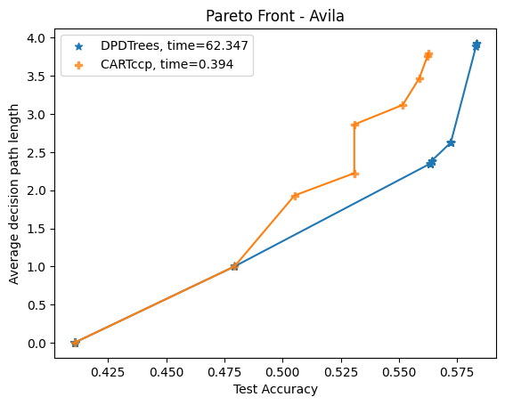

DPDTree#
Finding an optimal decision tree for a supervised learning task is a challenging combinatorial problem to solve at scale. DPDT frames the problem as a Markov Decision Problem (MDP). In the MDP, each trajectory corresponds to a sequence of tests on training data until a class is assigned. Potential tests are obtained by calling CART Breiman, 1984, and dynamic programming is used to induce the best sequence of tests, i.e the best decision trees. By definition, the train accuracy of DPDT will always be greater than CART. One other property of DPDT is that its trees pareto dominate CART’ w.r.t the trade-off between the average decision path length and the test accuracies. See e.g.: .
It is also possible to add feature costs when fitting the tree. It is also possible to do regression, including multi-output regression.
Usage#
Information on how to use DPDT library.
API#
Information on python classes behind DPDT.
Cite#
@misc{kohler2024interpretabledecisiontreesearch,
title={Interpretable Decision Tree Search as a Markov Decision Process},
author={Hector Kohler and Riad Akrour and Philippe Preux},
year={2024},
eprint={2309.12701},
archivePrefix={arXiv},
primaryClass={cs.LG},
url={https://arxiv.org/abs/2309.12701},
}